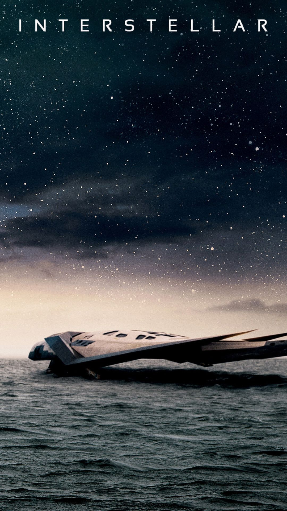

Interestelar
Año de publicación: 2014
Productor: Christopher Nolan

Es una película de ciencia ficción épica de 2014
Dirigida, escrita y producida por Christopher Nolan
Protagonizada por Matthew McConaughey, Anne Hathaway, Jessica Chastain, Bill Irwin, Ellen Burstyn, Michael Caine y Matt Damon
Ambientada en un futuro distópico donde la humanidad está sumida en una catástrofe de hambruna y desolación
La película sigue a un grupo de astronautas que viajan a través de un agujero de gusano cerca de Saturno en busca de un nuevo hogar para la humanidad
Calificación: 8.7/10 en IMDb